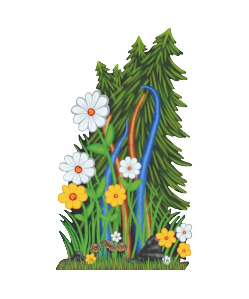
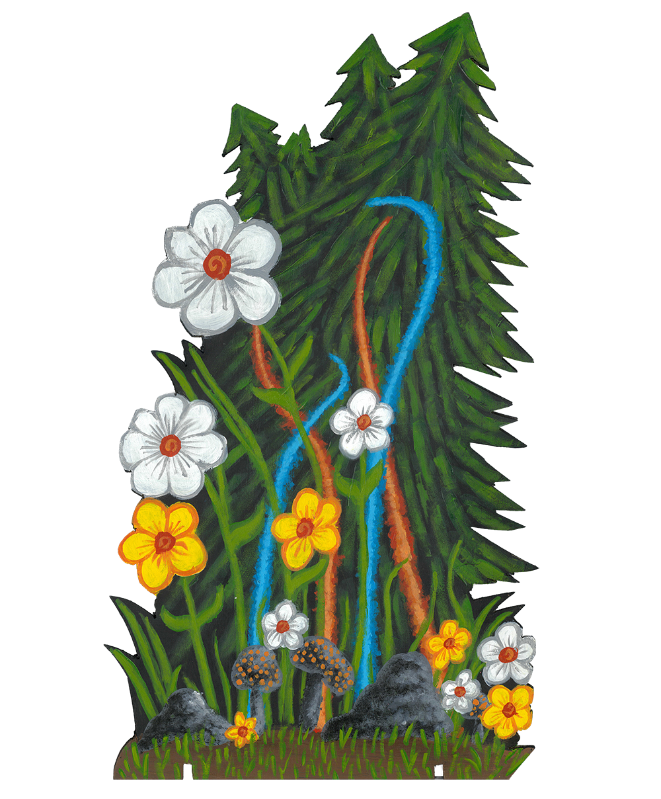
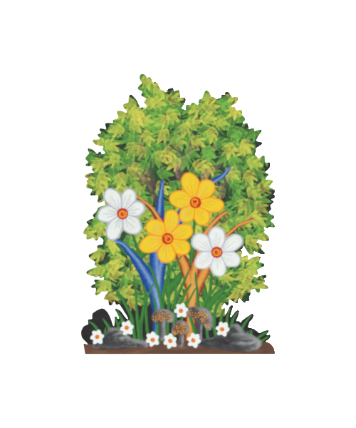
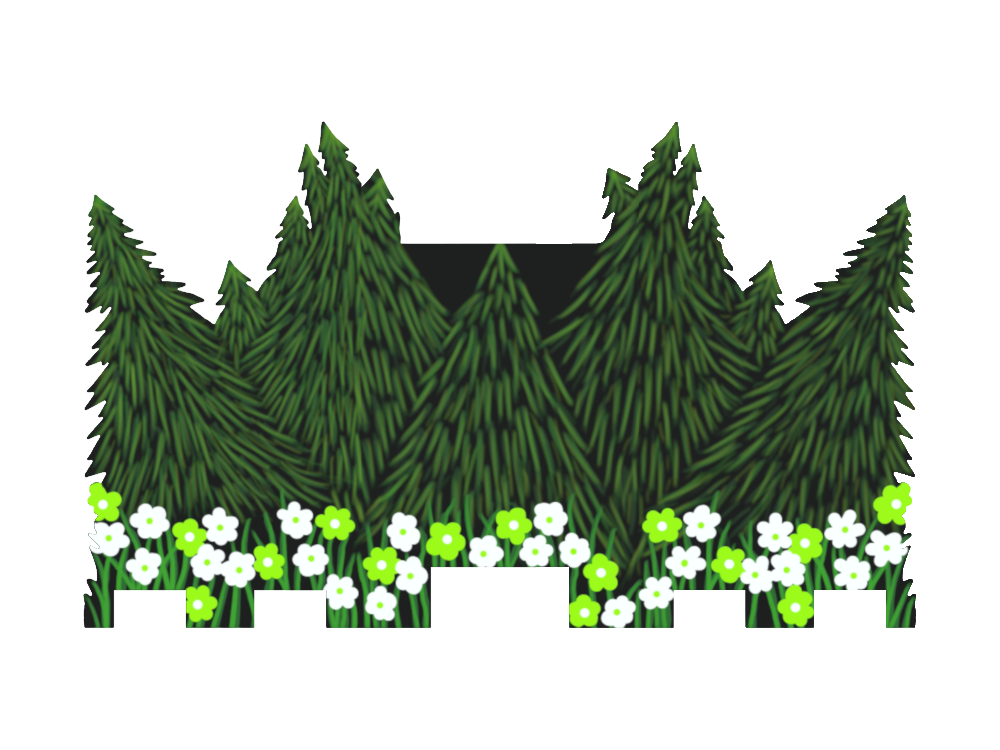
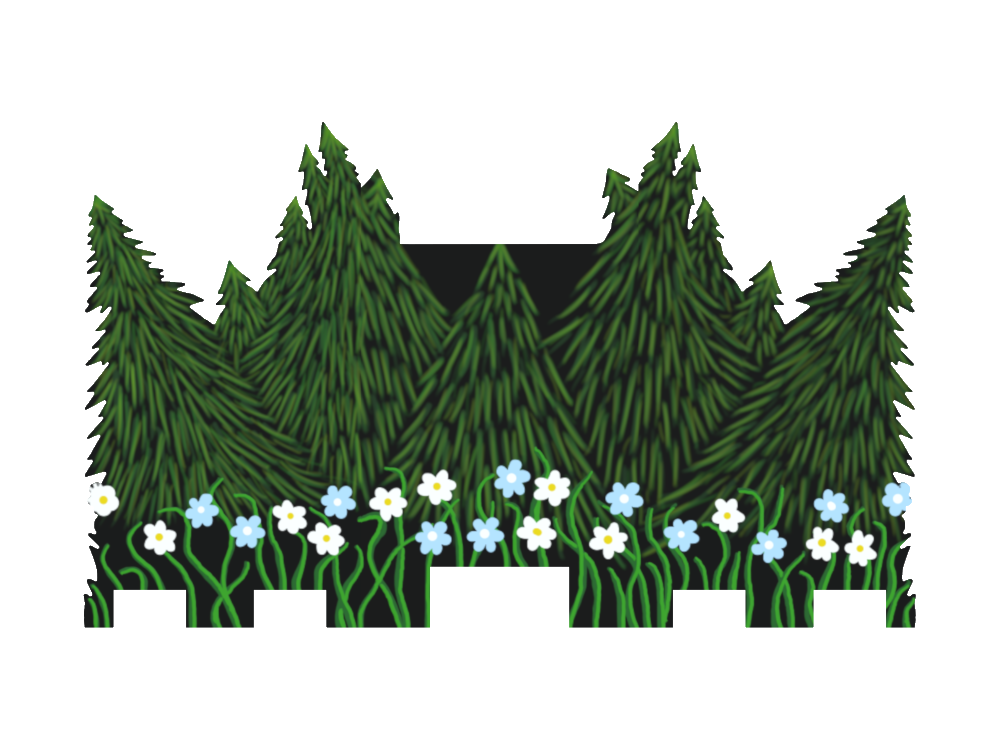
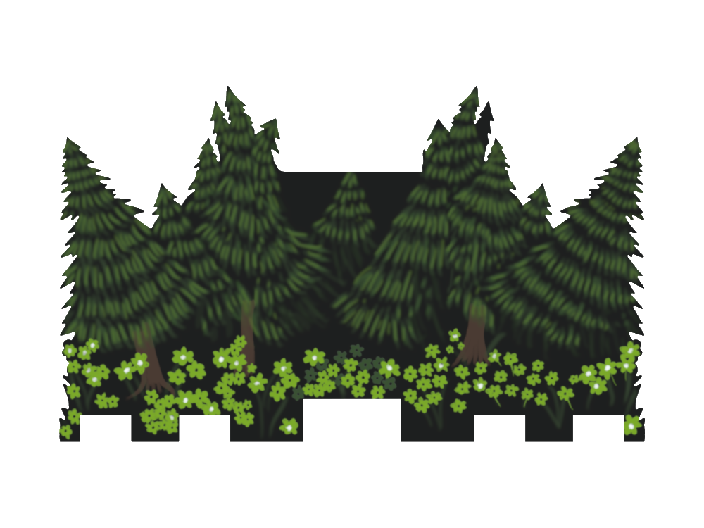
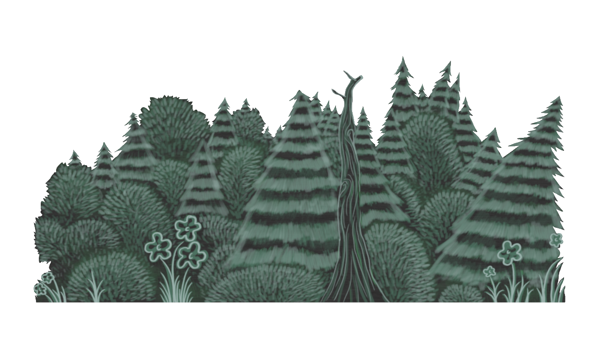
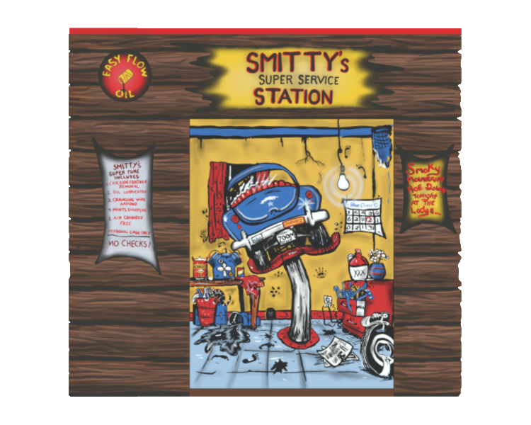
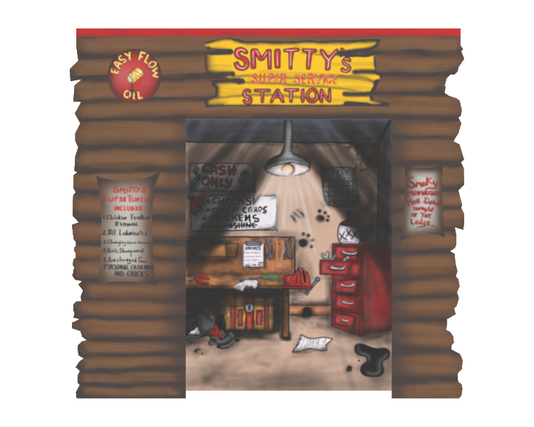
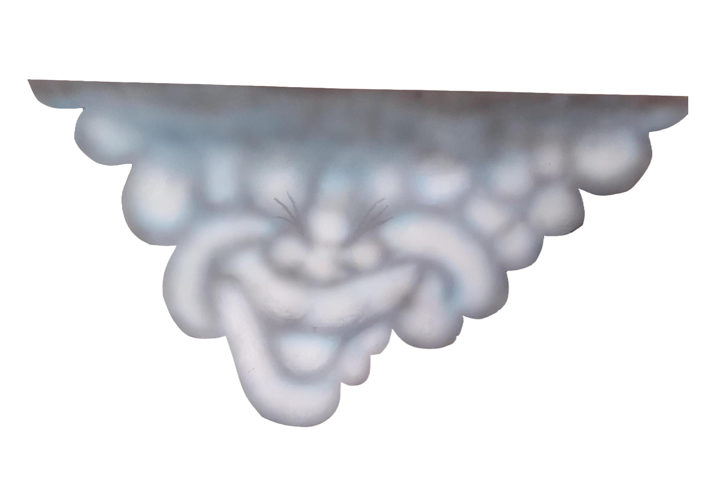

Backdrops
Below is a gallery full of backdrops that I have recreated both digitally and in real life.
Below is a gallery full of backdrops that I have recreated both digitally and in real life.

This Moon Tree backdrop is based off of the Standard design developed in 1982.

This Moon Tree backdrop is based off of the Standard design developed in 1982 but at a much smaller scale.

This Sun Tree backdrop is based off of the Standard design developed in 1982.

This Treeline backdrop is based off of the Standard design developed in 1982.

This Treeline backdrop is based off of the design developed in 1983.

This Treeline backdrop is based off of the design developed in 1981.

This Treeline backdrop is based off of the design developed in 1980.

This Smitty's Super Service Station backdrop is based off of the design developed in 1981.

This Smitty's Super Service Station backdrop is based off of the design developed in 1980.

This Cloud Backdrop is an In Real Life recreation of one created in 1980.